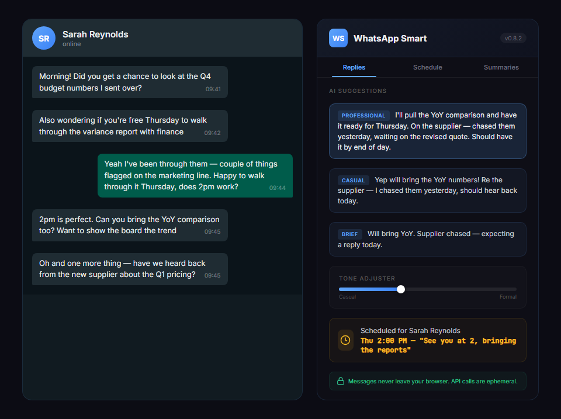
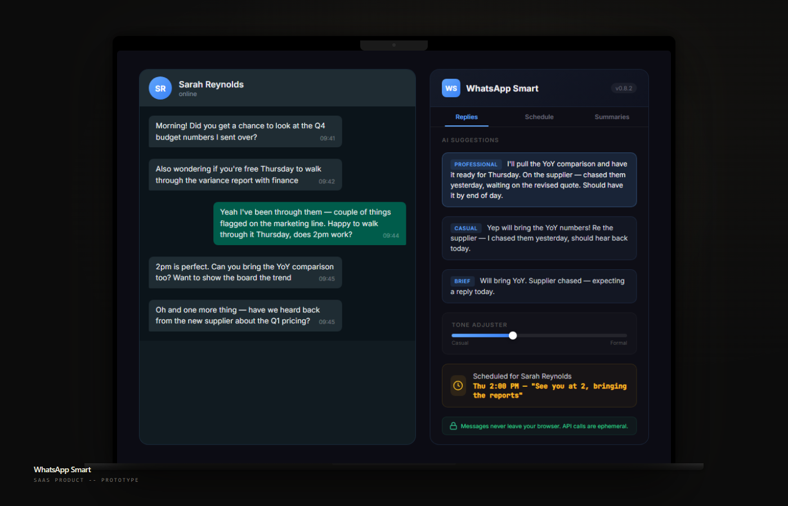

The schedule / Entry 04 / Chrome extension
WhatsApp Smart.
Prototype, never launchedAnd honest about it
2.5 billion people use WhatsApp daily with zero productivity tools. A Chrome extension that adds scheduling, AI replies, tone adjustment and group summaries. Messages stay in the browser unless you send one to the AI.
I kept running into the same friction. Want to schedule a birthday message for midnight? Can't. Need to catch up on a family group chat with 120 unread messages? Scroll through every single one. Want quick reply suggestions when you're juggling ten conversations? Nothing.
The gap is bigger than scheduling. There's no personal productivity layer at all. WhatsApp's own scheduling, added in early 2026, is single-message only with no recurring option. Every third-party tool in this space targets businesses running customer support through the WhatsApp Business API. Personal users got left behind. That was the gap I built into.
Every WhatsApp extension I found was built for businesses. I just wanted to schedule a birthday message.


You open WhatsApp Web and the extension is already there: a small toolbar next to the compose box with AI suggestions, a tone adjuster and a schedule button. A content script injects the UI via shadow DOM so it never clashes with WhatsApp's own styles. A background service worker handles scheduling through Chrome Alarms, so messages go out even if the tab isn't focused. Message access comes from an open-source WhatsApp Web API library, not brittle DOM scraping. No server required for core features. No sign-up.
Layer 1: Browser
Layer 2: Extension
Layer 3: External, optional
- F.1Smart schedulingOne-off or recurring messages, per-contact office hours so nothing fires at 3am, staggered batch sending.
- F.2AI reply suggestionsReads the chat context and suggests three replies instantly. Learns your emoji habits and tone.
- F.3Tone adjusterDraft quickly, then rewrite as formal, casual or professional with one click.
- F.4Group chat summary30+ unread messages become structured bullets: decisions, assignees, deadlines.
- F.5Undo sendA five-second countdown intercepts every message before it hits WhatsApp's servers.
- F.6Follow-up remindersFlag messages to bounce back later; keyword alerts for terms like "urgent" or "deadline".
- F.7Privacy firstAll data in local Chrome storage. No sign-up. Messages stay in the browser; only text you send to the AI leaves it, and those prompts are not stored.
This one carries an amber dot. Eleven features built, the architecture proven, the privacy model sound. It was never launched, and this ledger doesn't pretend otherwise. It earns its place here for the engineering: shadow DOM isolation inside a hostile host page, OS-level scheduling that survives a sleeping service worker, and an AI layer that works without ever holding your messages.
The whole extension sits on top of WhatsApp Web's own HTML. It reads that page and drives it, and WhatsApp can change it whenever they like without telling anyone. One update on their side could break sending overnight. I can't unit-test my way out of it either, because the code under test depends on markup I don't own. The spec logs it as known issue one. This page says it too.
| 01 | OpsPilot | The AI that answers my messages: 6,124+ documents, live finance data, one-click approval. | Production |
| 02 | Trading Bot | Four AI agents that veto my trades. 115+ sessions, zero impulsive trades let through. | Paper trading |
| 03 | Uni-Nation Digital | Website, inventory PWA and Hindi voice stock entry for the family fabric business. | Being repaired |
| 05 | SCS Cockpit | The study engine I built for my own CIMA Strategic Case Study. I passed. | Retired, job done |